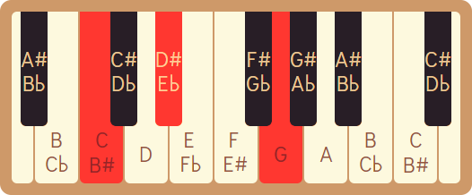
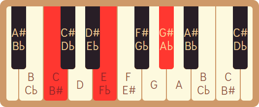

Um acorde é a combinação de duas ou mais notas tocadas simultaneamente, ele representa a harmonia e a sonoridade que sustentam a melodia. Além disso, desempenham um papel fundamental na harmonia de uma música, fornecendo uma progressão de sons que dá suporte à melodia e cria uma sensação de estabilidade e tensão.
Estrutura dos acordes
Alguns acordes mais utilizados são:
Maior
: geralmente representado por 'maj', 'M' ou apenas o nome da nota fundamental, este acorde na maioria das vezes transmite emoções positivas e vibrantes, e é formado pela nota principal, uma nota 4 semitons acima da principal e outra 3 semitons acima da anteior.
C / Cmaj / CM
Menor
: representado por 'min' ou 'm', muitas vezes passa uma sensação de tristeza, melancolia e outras emoções mais introspectivas. Este acorde é formado pela nota principal, uma nota 3 semitons acima da principal e outra 4 semitons acima da anteior.
 Cm / Cmin
Aumentado
: mostrado na partitura como 'aug' ou '+', evoca um sentimento de tensão, instabilidade e suspense. Formado pela nota principal, uma nota 4 semitons acima da principal e outra 4 semitons acima da anteior.
 Caug / C+
Diminuto
: representado na partitura como 'dim' ou '°' possui uma sonoridade dissonante, transmitindo ao ouvinte tensão, inquietação e as vezes tristeza. É formado pela nota principal, uma nota 3 semitons acima da principal e outra 3 semitons acima da anteior.